Mon été au CERN
Trois candidatures, un e-mail que j’ai failli manquer et neuf semaines de travail, de voyages et de nouvelles amitiés.
Je connaissais le CERN depuis des années. Avant les photos à ATLAS, les randonnées et les amis, il y a eu deux candidatures refusées. À ma troisième tentative, j’ai encore reçu un refus. L’histoire de mon été au CERN commence donc par un e-mail auquel j’ai failli ne pas prêter attention.
La troisième candidature
J’avais déjà postulé deux fois et reçu deux refus. Pour la troisième candidature, j’ai passé des mois à me préparer. J’ai étudié ce que le programme recherchait et contacté des personnes qui avaient déjà passé la sélection.
J’ai essayé de faire passer toute ma motivation dans ma candidature, de montrer à quel point je voulais être là. Le 2 avril, la réponse est arrivée : encore un refus. Presque un mois a passé et j’avais fini par ne plus y penser.
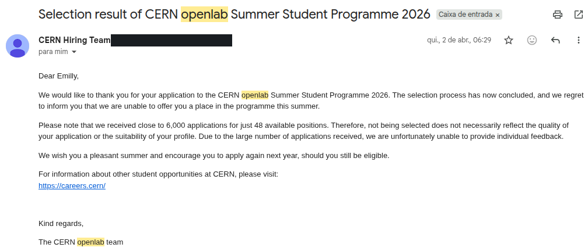
Lire l’extrait de l’e-mail
L’e-mail que j’ai failli manquer
Le 30 avril 2026, j’ai reçu un e-mail de CERN openlab au réveil. Comme j’avais déjà été refusée, j’ai pensé à un autre message automatique. Ce n’est qu’en lisant les détails du projet que j’ai compris : j’étais acceptée.
L’e-mail expliquait qu’un des projets avait évolué. J’avais été sélectionnée parmi près de 6 000 candidatures valides pour passer neuf semaines au CERN sur le projet « Trigger Level Analysis data preparation through co-processors ».
C’était incroyable. Ensuite, il a fallu vite acheter les billets et organiser tout le voyage. Sur place, j’ai partagé une chambre avec une Mexicaine, et c’était vraiment chouette. L’équipe du programme avait tout organisé pour nous.
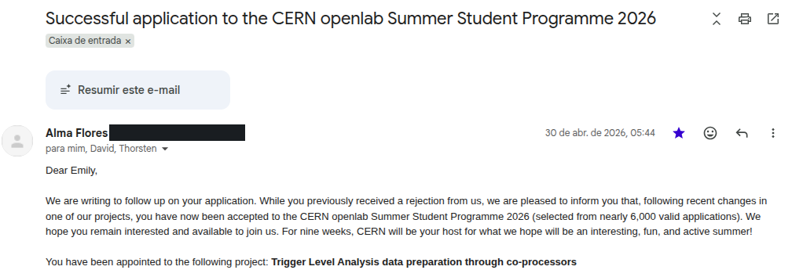
Lire l’extrait de l’e-mail

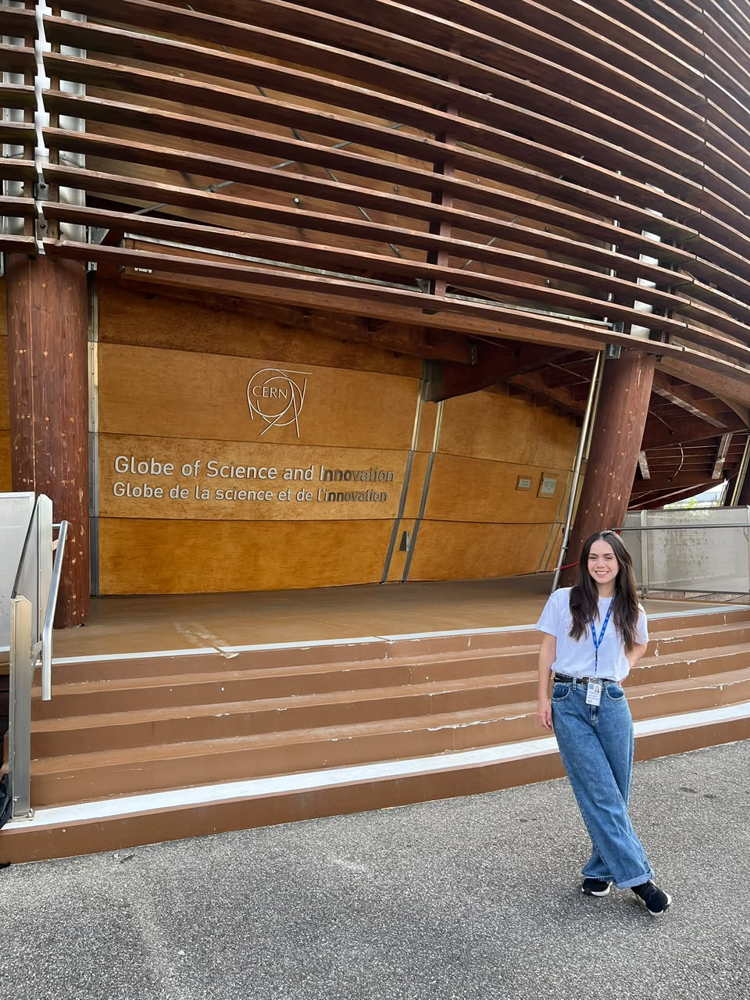
Le projet sur lequel j’ai travaillé
Mon projet s’intitulait « Trigger Level Analysis Data Preparation through Co-processors ». J’ai travaillé avec mes encadrants Ioannis Xiotidis et Noah Clarke Hall, dans le cadre des activités Next-Generation Triggers pour ATLAS.
La question était concrète : pouvait-on transformer beaucoup de données du calorimètre en une petite liste de jets, tout en conservant l’information utile pour la physique et en réduisant les données à transmettre ? Les jets sont des ensembles de particules reconstruits à partir des signaux du détecteur. J’ai étudié de petits modèles d’apprentissage automatique en tenant compte d’une future implémentation sur FPGA.
Je suis partie d’un modèle convolutif de 708 paramètres entraînables, puis j’ai étudié l’attention entre candidats et l’effet des collisions superposées, le pile-up. Le modèle de base a atteint 77,3 % d’efficacité pour 78,0 % de pureté ; l’attention a porté l’efficacité à environ 80,5 %. Le débit de sortie a été estimé à environ 2,1 Gb/s par carte, sous la limite supposée de 20 Gb/s. La synthèse matérielle et les mesures de latence restaient des étapes à réaliser.

Les visites et les cours
J’ai visité ATLAS, l’expérience à laquelle mon travail était lié, mais aussi ALICE et l’Usine d’antimatière. Ces photos montrent des endroits très différents du CERN, avec leurs équipements et leurs expériences.
Et oui, une de ces photos a été prise pendant un cours avec le créateur du C++. Elle avait toute sa place dans ce journal.

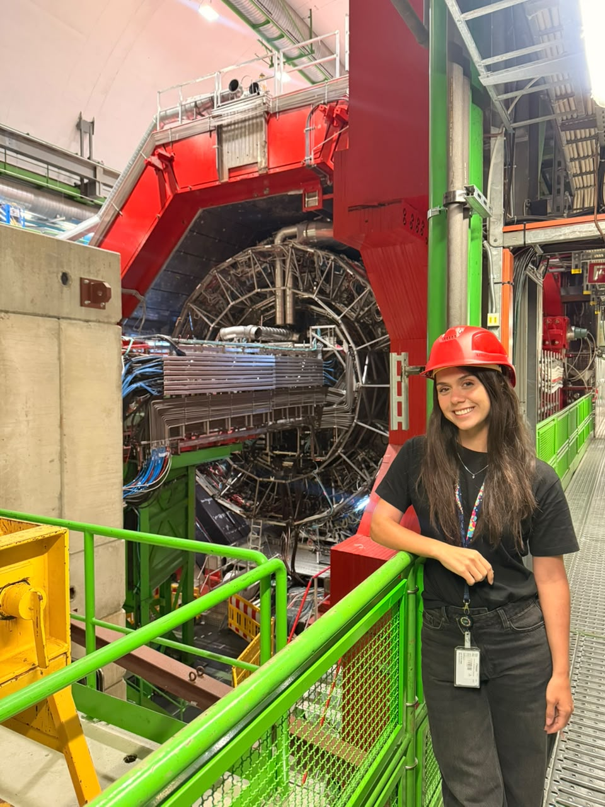

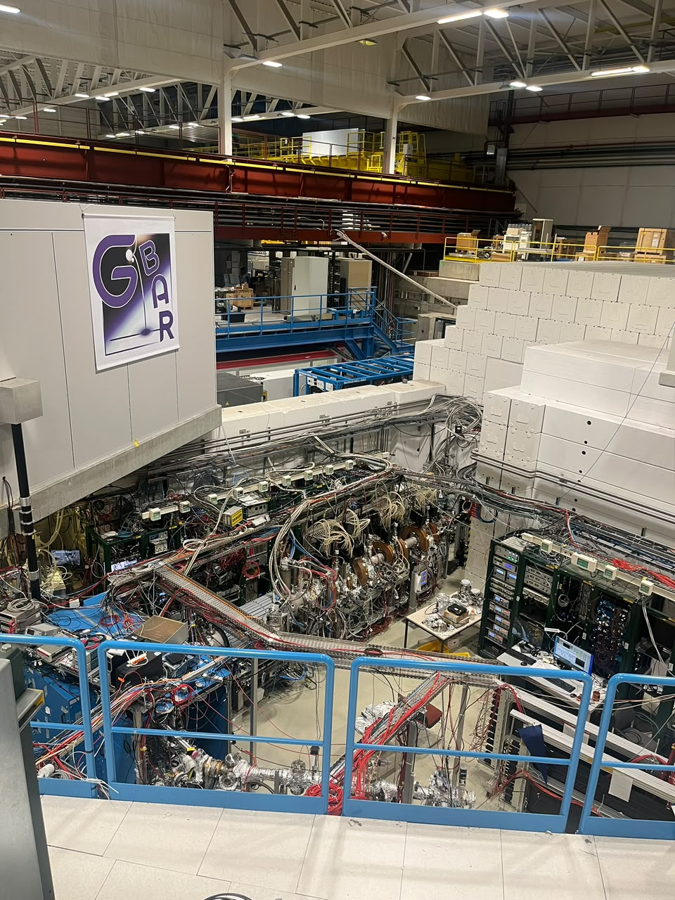

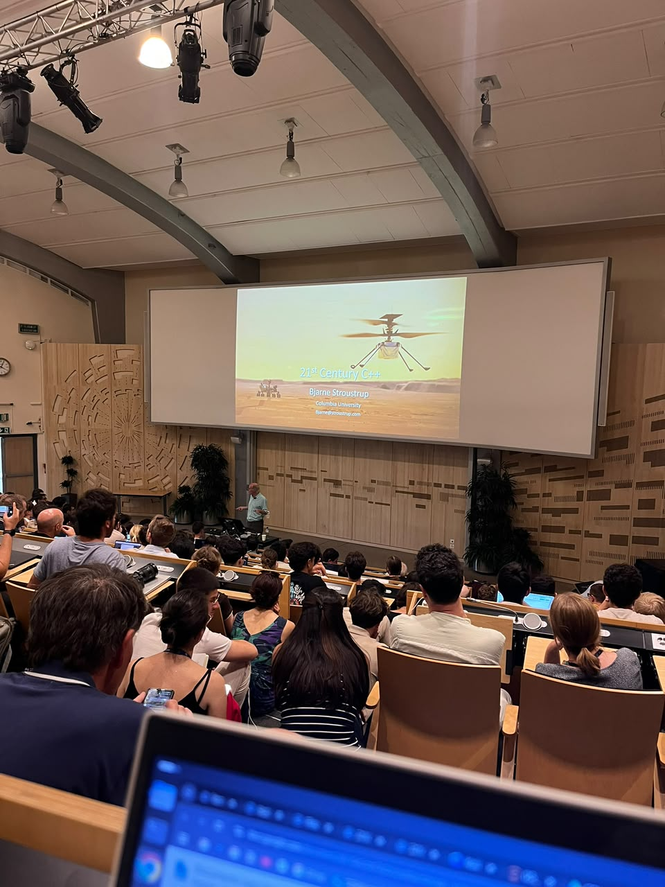
J’avais aussi mes chaussures de randonnée
Il y a eu beaucoup de montagnes cet été-là. J’ai fait des randonnées, voyagé avec des amis et pris beaucoup de photos. Le lac, les sentiers et les paysages de cet album font aussi partie de cette expérience.
Je suis allée en Espagne pour regarder la finale de la Coupe du monde. J’ai aussi des souvenirs de Barcelone, de la maison d’Einstein à Berne, de médailles Nobel exposées et d’une soirée au cinéma en plein air. Il y avait beaucoup à découvrir en dehors du laboratoire.


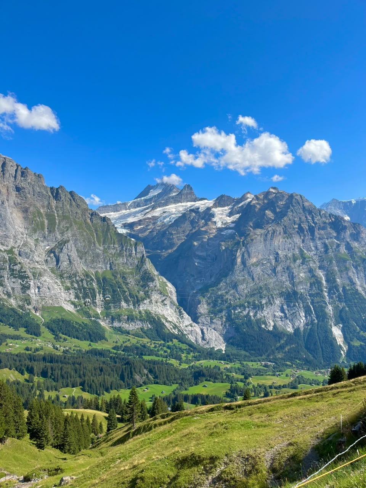

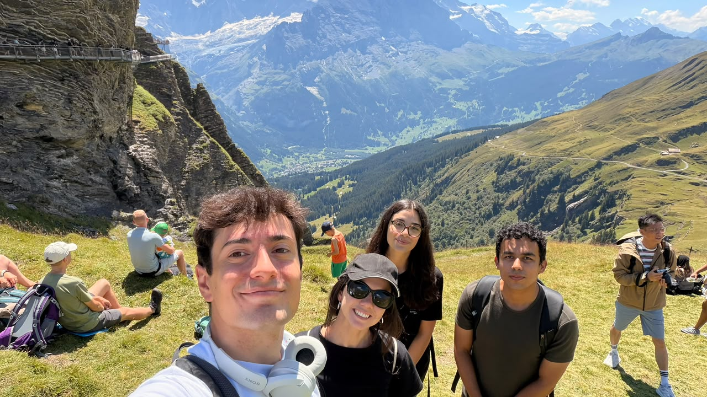

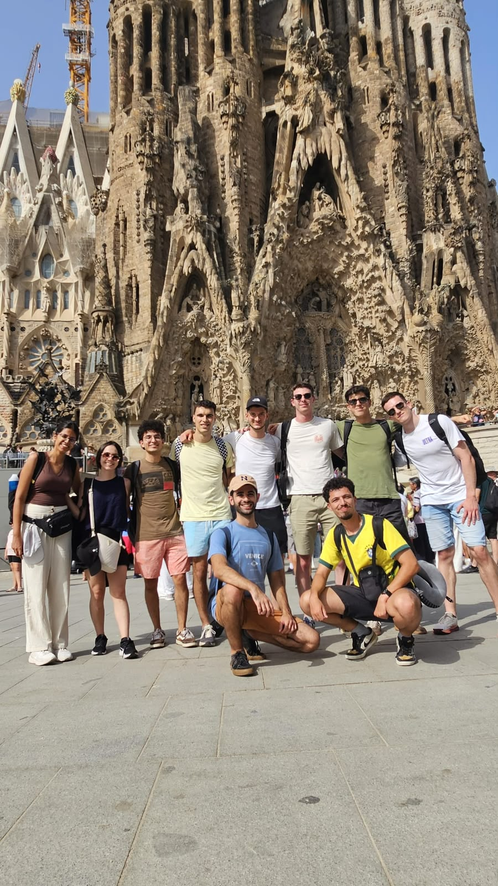

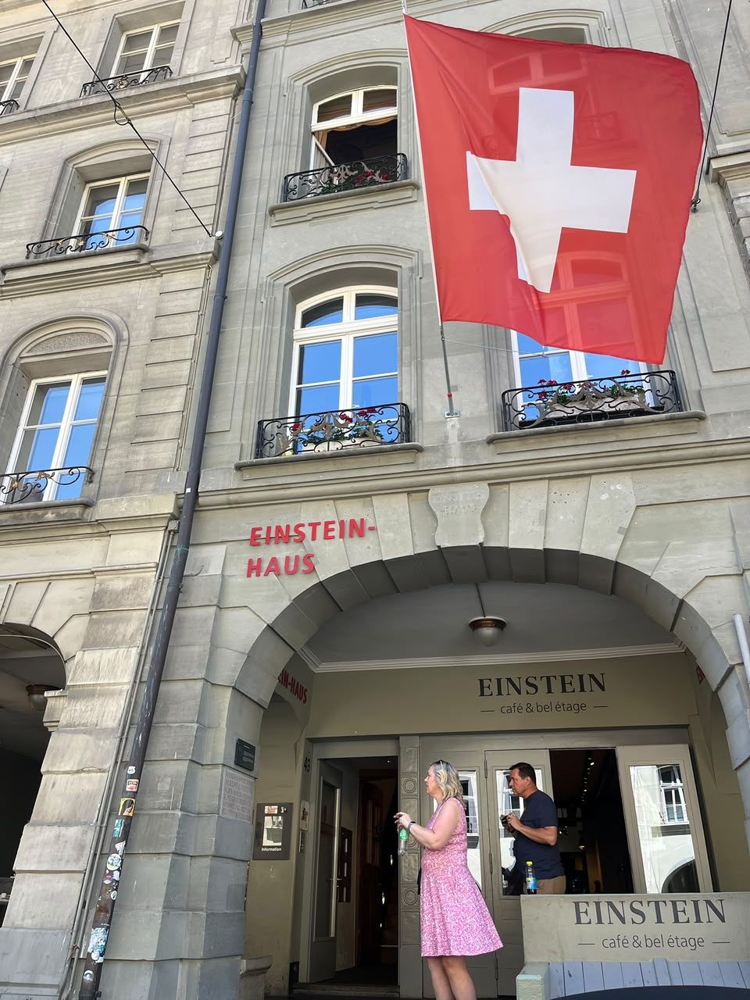

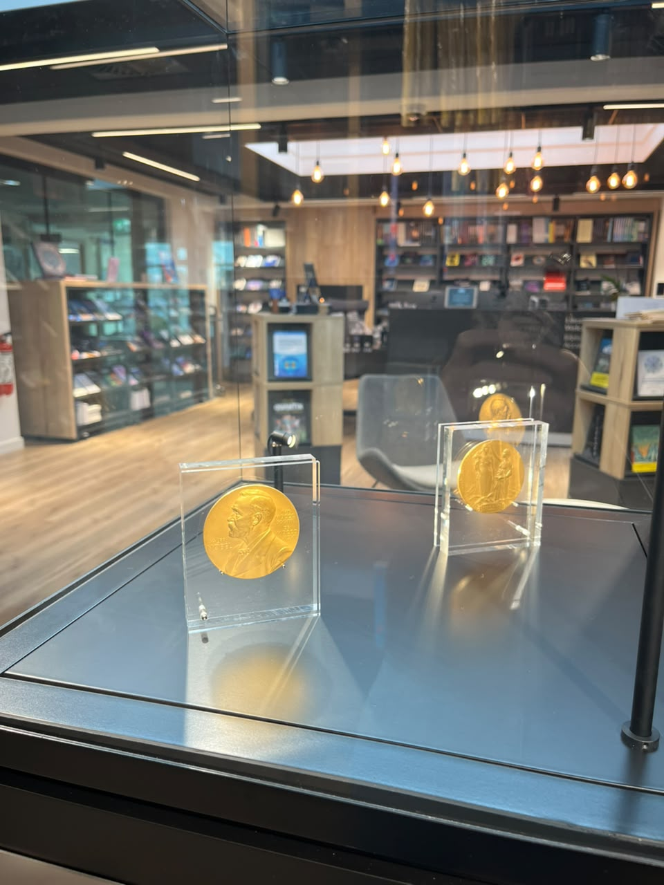

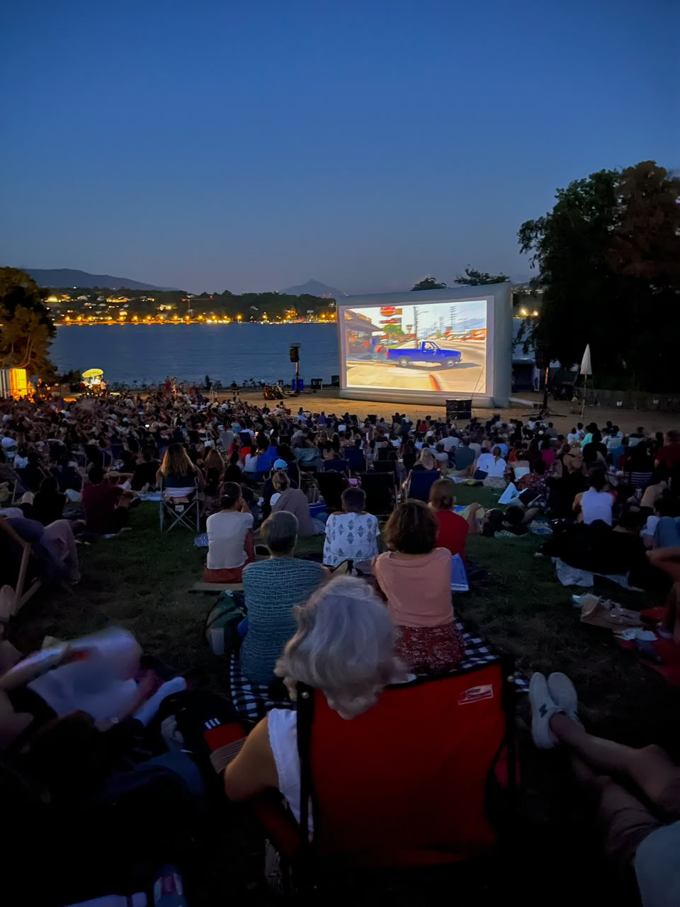
Et puis, il y a eu les rencontres
J’ai rencontré des amis incroyables pendant le programme. Il y a des photos à table, sur le campus, en sortie et dans les montagnes. Je voulais garder ces moments ici aussi, à côté du rapport et du travail. Ils font partie de mes souvenirs du CERN.

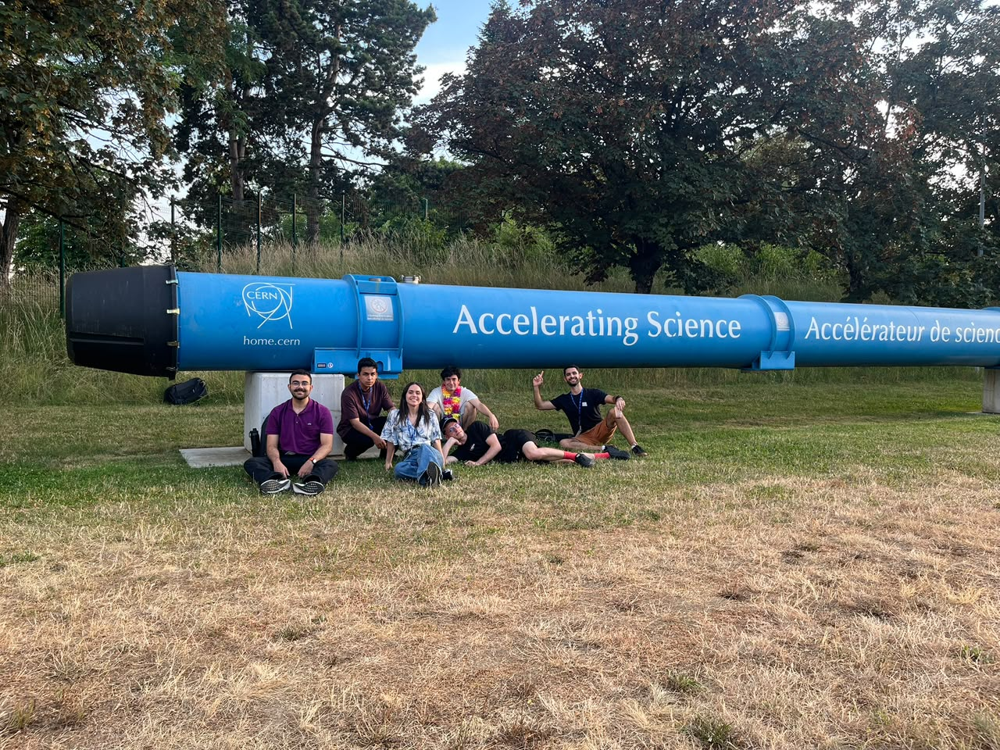


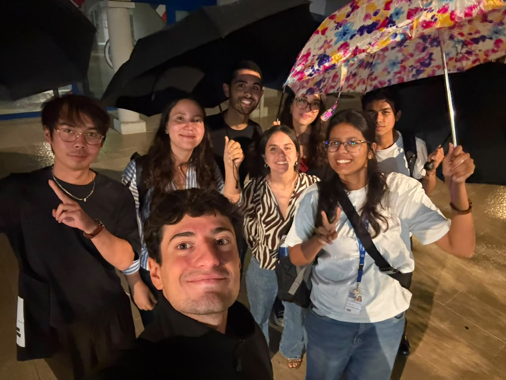

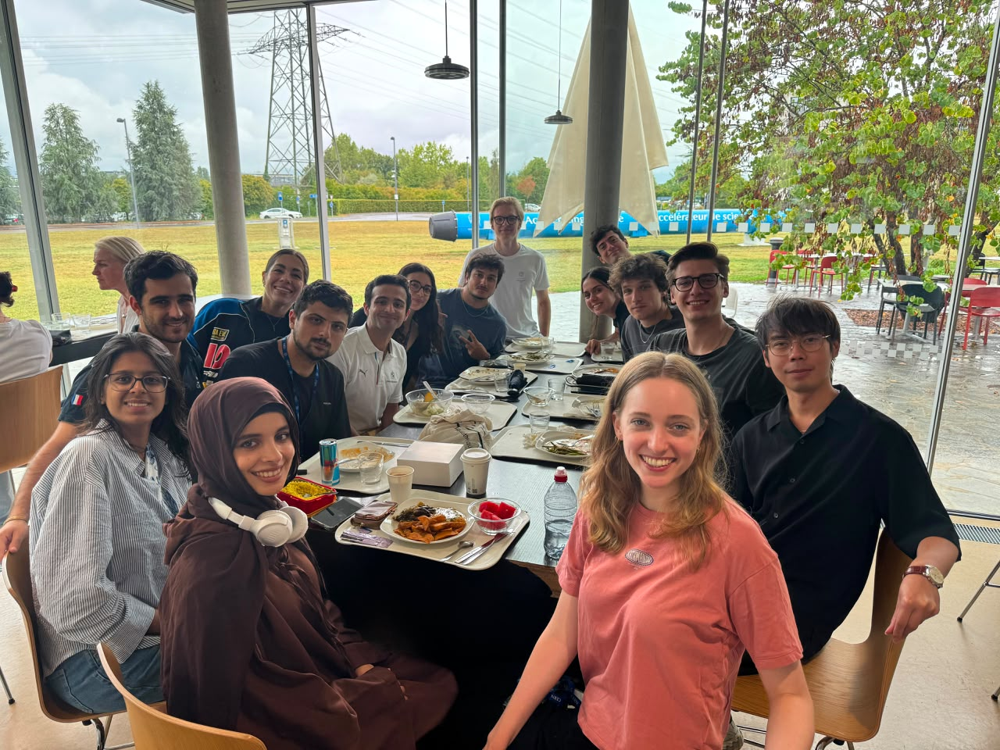
C’est ici que je rassemble ces histoires. J’en ajouterai d’autres au fil de mes textes.
Emilly← Retour au journal